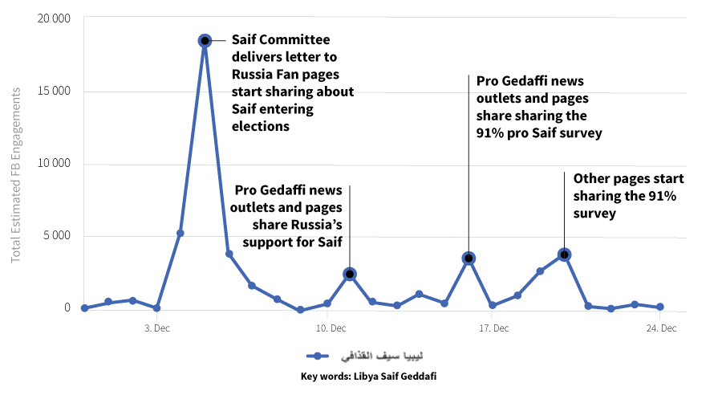

DEMOCRACY
REPORTING
INTERNATIONAL
LIBYA SOCIAL MEDIA MONITORING REPORT
December 2018 – January 2019
In December 2018, DRI has begun monitoring Facebook content posted on Libyan public pages established for/run by political figures, government institutions and media outlets. This report is an attempt to understand the social media landscape in Libya. It seeks to identify key narratives that shape the Libyan public opinion and to map potential social media manipulation and exploitation. The report offers an analysis of content consumed by and behavior of Libyan users on Facebook regarding the constitution, elections and the political process in general.
Over the past seven years, the power and reach of the internet continue to grow substantially. In 2011, social media was used as a tool to mobilize Libyans to revolt against Mu’amar Gaddafi. However, in 2014, the Libyan social media landscape, particularly Facebook, has experienced a dramatical change in terms of the purpose for which it Is used and the freedom to use it, especially public fora. Facebook is no longer restricted to activism dissemination of information and positive social change. It has become a powerful instrument of war in the hands of militias and combatant groups to intensify their propaganda and celebrate their victories.
Narratives promoted on Libyan social media largely contribute to shaping public opinions regarding key issues connected to the country’s democratic transition. The Washington Post once described Facebook as the “most popular platform [that] doesn’t just mirror chaos but it can act as a force multiplier.”
Characteristics of the Libyan Social Media Landscape
The largest numbers of Libyan active social media users are found on Facebook, Youtube and Twitter respectively. By the end of December 2017, It is estimated that the number of active Facebook users was 61%. Meanwhile, Youtube ranks second with 29% followed by Twitter at 7% of the total Libyan internet users.
Social Media statistics between January - November 2018
Despite the perceived bias of many media outlets, media pages on Facebook have the largest number of followers and likes as compared to government, militia and fan pages. In the Libyan context, professional managed and verified pages of public and political figures are rare. The below figure illustrates the biggest Facebook pages according to the number of Likes.
Biggest Media Outlets Facebook Pages according to the number of Likes
Libyans use social media (SM) primarily for communication, socialization, transactional business and most importantly entertainment. In areas where internet access is available, social media would be used as a source of news. Otherwise, radio would be the primary source of information1. One of our key findings is that conversations and debates about politics rarely appear on public pages. Due to ethical considerations, monitoring private groups has been excluded.
Gender and Social Media in Libya
An important feature of the social media landscape appears to be the low visibility of women participation in online public political debates. In the period covered by this report, we observed a trend where the majority of comments and reactions on Facebook posts have been by male users. Women often refrained from engaging with public posts, resupply to protect their reputation and avoid abusive responses by male users.
While there is no reliable data on the topic, anecdotal evidence suggests that since 2014, Libyan female bloggers and social media users have resorted to self-censorship on public online forums and preferred instead either private or female-only online spaces to control their audience and sometimes their narrative. There are private female-only Facebook groups created by CSOs such as the Silphium Project to provide a safe space for women to freely debate politics and other contentious topics.
Furthermore, Twitter has been found to provide a safer public platform for Libyan women to express their opinions and engage in discussions on a plethora of topics including women’s rights and politics. Since Twitter is not widely used in Libya, female tweeps2 are able to avoid the monitoring of their family members, which is usually one of the reasons why women avoid public Facebook. Posting in English adds an additional layer of protection as it allegedly shields them from potential harassment and bullying. For these women, any public or semi-public expression of opinion is therefore seen as a possible risk.
Yet, for every rule there is an exception. There are powerful women social media influencers who have public profile and are sharing their views publicly on both Facebook and Twitter. But more times than not, women are instrumentalized to serve a certain purpose by some male users. For instance, public posts that address issues related to women are usually met with hate speech and accusations that abandoning Sharia in Libya would lead women to immorality.
A case in point is the recent incident of Café Casa in Benghazi. A group of female tweeps organized a TweetUp for young tweeps who have been interacting for sometime on Twitter without meeting in real life. The TweetUp3 was supposed to happen in a café called Casa in Benghazi. The hashtag تجمع ـ بنات ـ تويتر # or The Gathering of Female Tweeps was started to mobilize for the meeting which was to take place on 27th December 2018.
The meeting was raided by Benghazi’s Ministry of Interior (MOI), arresting the young women and the café staff. On the evening of 27th, MOI Facebook page published a damning and damaging post (now deleted and MOI Facebook was later taken down by MOI in January) accusing the TweetUp attendants of being immoral and describing the event as lewd and the café a brothel. Although deleted, the statement was picked up by big news outlets such as 218TV, which led to a wave of hate speech against the young women.
Pro Libyan National Army (LNA) pages shared the statement, calling it a victory for Benghazi security arrangements. Some pro-LNA pages went as far as posting fake case documents as evidence that the case is till being considered by the court.
For Islamist-leaning pages, the MOI statement was seen as a victory against the liberals. On 29th December, a snap chat video was leaked by a fan page called the Original Benghazi Breaking بنغازي عاجل الأصلية supporting Benghazi security forces and inciting violence against the girls and their families. The video went viral, amassing more than 65K views by the end of December. The video was later removed by Facebook for violating the Facebook community policies, but the damage was already done.
Activists, mainly women, took to Twitter to defend themselves and the other young women. Approximately 1500 unique tweets were posted and the top tweets on the hashtag were by women. The majority of tweets expressed disbelief and some shared Libyan laws, which prohibits such raids. Women voiced their side of the story and began talking about sexualized and gender-based violence and oppression that are plaguing the Libyan society.
On 29th December, the hashtag caught the attention of UNSMIL, prompting it to release a statement in support of the young women
Social Media Insights
December 2018
During the month of December, Libyan Facebook users tended to like or react to posts as their preferred means of engagement with content across the four key topics covered by this report; namely, the constitution, the UN Road Map, elections and security. We found that the number of comments on political posts are low compared to entertainment. The only exception was if the post was about significant events such as the terrorist attack on Libya’s Foreign Ministry. Anecdotal evidence suggest that the low number of comments/shares is due partially to the state of apathy towards the political process and/or the fear of reprisal if the user comments under his/her real name. The below chart shows the monthly average engagement with security content during December 2018.
Total Estimated FB Engagement for Tripoli Security Related Content
Another notable trend observed in the month of December was the Libyan users’ behavior regarding viewing videos. Pages of official state bodies such as the Media Office for the President of the GNA Presidential Council (@GNAMedia) show users/followers are more attracted to video content rather than text or still photos of the same event. For example, two separate posts were published on GNA’s Sarraj’s participation in a workshop on public corporate governance; one was a video and the other was a long text with still photos. The video amassed 1.4K views, 104 likes/reactions, 23 comments and 4 shares, while text received 22 comments, 146 reactions and 8 shares.
In general terms, the user engagement during December was at its highest peak when posts addressed the Tripoli protection force formation, followed by elections and the return of Said al-Islam Gaddafi to the Libyan politics.
Average Engagements By Content Type

January 2018
The month of January saw a lower average of comments and shares compared to the average of engagements. In most of the cases, negative headlines and topics receive the highest engagement rates. For example, a sum of 377 posts about the UNSMIL and UNSMIL Special Envoy received a total of 95,676 engagements on Facebook, with an average of 253 engagements per article.
Engagements & Number of Articles Published Overall

Social Media Insights about the Constitution
In December approximately 61 articles addressing various aspects of the constitutional referendum, drafting and awareness raising were published on social media. Users showed often displayed disinterest in political news, yet when the HNEC announced the date for the constitutional referendum, the total engagement jumped to nearly 4000 with the post, which way higher than other constitution-related topic published within the same time period as shown in the below graph:
Engagements & Number of Articles Published Overall
In January, the total number of articles about the constitution dropped to 27, gathering only 4505 engagements in total, out of which 4,388 were Likes. The average engagement per article is around 167. The post that received the highest engagement of 1.5K was Almarsad article covering the House of Representatives’ proposed alternatives in case of failure to hold a constitutional referendum.
Engagements & Number of Articles Published over Time
Based on manual analysis of all of the 23 comments made on the post until the time this data was extracted, all were found to have been posted by male users. The comments ranges from humor, abuse to accusations, while the tone was predominantly negative.
Social Media Insights about the Elections
With the municipal elections approaching, the Central Committee for the Municipal Councils Elections (CCMCE) posted regularly on its official Facebook page. In the period from 5 to 20 December, CCMCE published 26 posts providing voters with the necessary information regarding voter registration. The post announcing the beginning of the voter registration received the highest number of engagement (1036) and was shared 414 times. The same trend continued in January where CCMCE recorded the highest average engagements as compared to other government pages.
The Administrator of the CCMCE page responded to questions posed by the users and provided the necessary information whether by directing them to a CCMCE Branch or otherwise. The Page Admin was able to discredit imposter pages that aim at disseminating fake news about the municipal elections. In general, the comments section is well managed and very few abusive or negative comments were found.
In December there were heated discussions in social media about two controversial potential candidates for President: Saif al-Islam and Hassan Tatanaki. Interestingly, the first pieces of news about their possible candidature were sponsored. It appeared that a targeted social media campaign is at work to frame them as heavy weight politicians. The initial motive may be to secure their seat in the UN-backed Comprehensive Dialogue Conference.
A Facebook entitled “Mandela Libya” was created comparing Said Al-Islam to Nelson Mandela. It posted a sponsored poll asking citizens whether they support Said al-Islam Gaddafi to be elected as President. The page reported that 65,125 out of 71,065 said Yes.
Despite the page was created in December 2018, it already gained 103.4K Likes/followers. We found that the number of Likes and Shares of the various posts on the page is significantly higher than other comparable public FB pages. For instance, the post announcing the results of the poll received 32,978 reactions, 9,813 mostly supportive comments and 817 shares.

The other presidential hopeful, Hassan Tatanaki is a Libyan businessman who has just founded a political party entitled “Libyan Democratic Unity”. He has a professional public page, created in 2013, with 1.8 million Likes. Despite a significant number of the users following his page has grown organically, DRI has found that there is a substantial number of fake accounts as well. DRI has manually inspected a sample of 10,000 accounts from the page and found the same pattern of names, occupation, education and newly acquired Facebook friendships as in the case of Saif al-Gaddafi. Unlike Mandela Libya page, comments on Tatanki’s are unfiltered as negative and abusive comments are left unremoved under the various posts.
Tatanaki has received special media attention in December, particularly his statement criticizing the successive Libyan governments for the protracted conflict and political crisis. His statement was picked up by several news outlets, one of which is Almotawaset website. The news item was shared from this platform 13,535 times, which is an unusually high number in the Libyan SM landscape.
Tatanki gave an interview to Al Arabiya channel, which was then posted as a sponsored post on I am Libyan and my wife as well أنا ليبي ومراتي ليبية where he says that the only solution to achieve stability is elections of a single ruler. The majority of the comments were sarcastic. Some users asked the page admins about the amount of money they were paid to sponsor the post.
In January, the number of posts about Tatanaki dropped as compared to the month of December. However, the pattern of user engagement with relevant posts remain the same. For instance, the video post entitled “The only solution for the stability of Libya is t amend the constitution” was viewed 118,388 times and received 2.8K Likes, 197 comments and 78 shares.